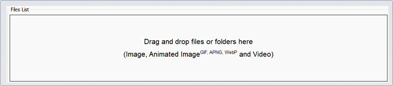
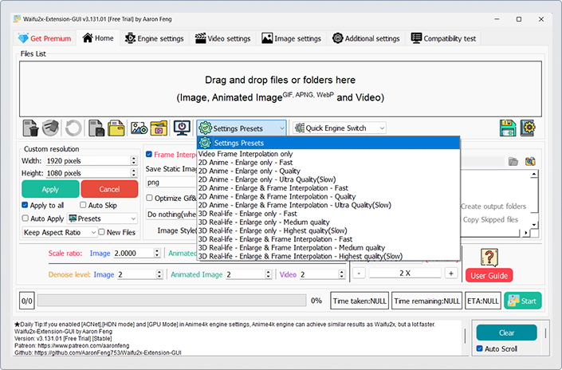
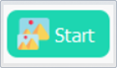

Cómo utilizar Waifu2x
Paso 1: Carga del Archivo
Selecciona tu archivo (imagen, foto, GIF o video) y arrástralo directamente al área de trabajo del programa.
Paso 2: Configuración del Modelo de IA
En la sección de selección del modelo, elige el modelo de Inteligencia Artificial más adecuado para tu contenido. Usa el modelo estándar para ilustraciones y anime, o uno específico para fotografías reales.
Paso 3: Ajuste de Parámetros
En los ajustes (Adjusters), configura lo siguiente:
-
• Nivel de Reducción de Ruido: Controla el equilibrio entre limpieza e integridad del detalle fino.
-
• Factor de Escala: Determina el tamaño final del archivo (2x, 4x, etc.).
Paso 4: Procesamiento y Resultado
Haz clic en "Start" para iniciar la mejora. El archivo final se guardará automáticamente en tu carpeta de salida.
